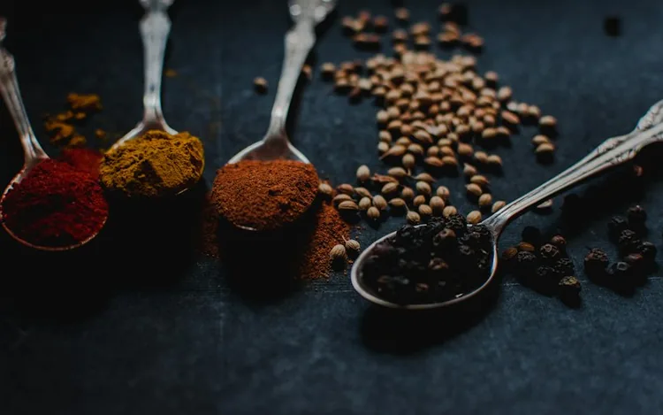

WELLNESS4 MIN READ
Adaptogens: The Secret to Managing Modern Stress
How ashwagandha, rhodiola, and holy basil regulate cortisol spikes and protect cellular longevity.

Synthesizing Bio-Active Formulations...

WELLNESSHow ashwagandha, rhodiola, and holy basil regulate cortisol spikes and protect cellular longevity.
Why topical probiotics and lipid-barrier nourishment outperform conventional harsh cleansers.
The revolution in tailoring pharmacotherapy to unique metabolic rates and genomic blueprints.
Clinical trials on hericenones and triterpenes that stimulate nerve growth factor (NGF) and promote cognitive resilience.
Why synchronizing botanical extracts and pharmaceutical dosing with biological clocks optimizes metabolic efficacy.
How lipid encapsulation and black pepper alkaloids overcome enzymatic degradation to dramatically increase nutrient uptake.
How clinical-grade polyphenols and short-chain fatty acids reinforce the mucosal lining and modulate systemic inflammatory markers.
Comparative pharmacognosy examining the synergistic entourage effect of whole plant medicine versus single molecule synthetics.
The neurobiology of parasympathetic activation, breathwork cadence, and how daily stillness restores adrenal equilibrium.
Learn the ancient rituals and modern clinical validations behind dry brushing, hydration timing, and postural drainage for systemic vitality.
Authored by our resident clinical compounding pharmacists, this peer-reviewed monograph analyzes salivary cortisol curves, DHEA-S ratios, and neuro-inflammatory markers across 180 patient cohorts administered micro-dosed full-spectrum withanolides.
Bridging time-tested botanical wisdom and modern clinical pharmacology through multidisciplinary expertise.
Integrative oncologist and botanical researcher exploring natural adjuvant therapies and clinical trials.
Third-generation ethnobotanist dedicated to sustainable foraging, biodynamics, and supercritical CO2 extraction.
Specializing in gut-brain axis modulation, microbiome restoration, and bioavailable micronutrient protocols.
Investigating individual genomic variations in drug response to curate personalized herbal pharmacotherapy.
Receive evidence-backed wellness insights, seasonal apothecary guides, and exclusive formulations directly to your inbox every Sunday.